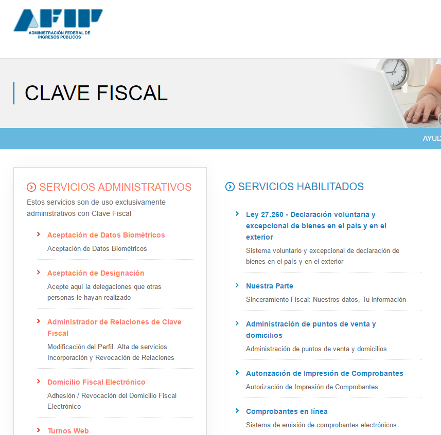

Dirigase a la página de AFIP y registrese con su CUIT y clave fiscal.
Seleccione "Administrador de Relaciones de Clave Fiscal
En la pagina "Administrador de Relaciones" haga click en el boton "Nueva Relacion"

Haga click en el boton "Buscar" para seleccionar el servicio que va a relacionar (Facturación Electrónica)

En la lista desplegada vaya a AFIP -> Web Services y haga click sobre "Facturación Electrónica"
Una vez seleccionado "Facturación Electrónica" volverá al "Administrador de Relaciones" y ahi deberá elegir el representante haciendo click en el boton "Buscar"

Ingrese el CUIT 20318638803. Y haga click en "Confirmar"

De vuelta en "Administrador de Relaciones" queda hacer click en "Confirmar" para terminar la delegación.

Imprima el comprobante de autorización. Y salga de la página de AFIP.
Por ultimo debe notificarnos del inicio del trámite para que podamos confirmarlo y permitir el uso del sistema. Para ello haga click en "Notificar delegación" en "Configuración"